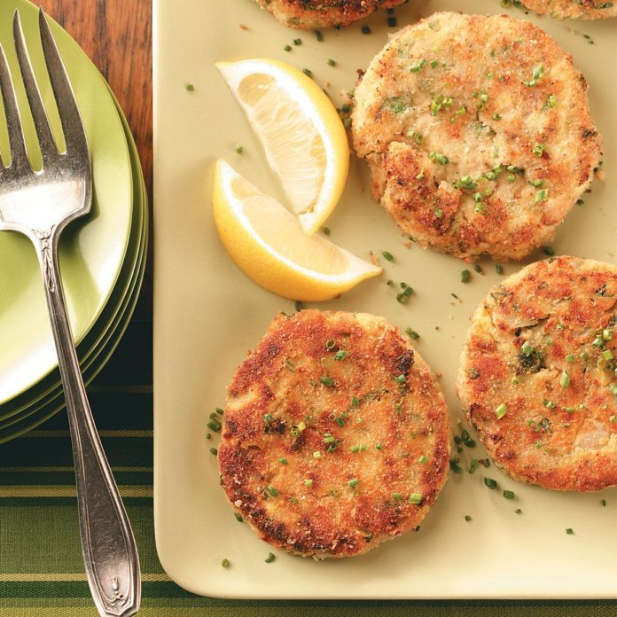

recipe number: 7
author: Kamila Wilczynska
author: Kamila Wilczynska

Ingredients
1 tablespoon butter
1/2 cup finely chopped onion
1 pouch (6.4 ounces) light tuna in water
1 cup seasoned bread crumbs, divided
1 cup shredded zucchini
2 large eggs, lightly beaten
1/3 cup minced fresh parsley
1 teaspoon lemon juice
1/2 teaspoon salt
1/8 teaspoon pepper
2 tablespoons canola oil
Directions:
In a large saucepan, heat butter over medium-high heat. Add onion; cook and stir until tender. Remove from heat. Add tuna, 1/2 cup bread crumbs, zucchini, eggs, parsley, lemon juice, salt and pepper to onion mixture; mix lightly but thoroughly. Shape into six 1/2-in.-thick patties; coat with remaining bread crumbs. In a large skillet, heat oil over medium heat. Add patties; cook 3 minutes on each side or until golden brown and heated through.
1/2 cup finely chopped onion
1 pouch (6.4 ounces) light tuna in water
1 cup seasoned bread crumbs, divided
1 cup shredded zucchini
2 large eggs, lightly beaten
1/3 cup minced fresh parsley
1 teaspoon lemon juice
1/2 teaspoon salt
1/8 teaspoon pepper
2 tablespoons canola oil
Directions:
In a large saucepan, heat butter over medium-high heat. Add onion; cook and stir until tender. Remove from heat. Add tuna, 1/2 cup bread crumbs, zucchini, eggs, parsley, lemon juice, salt and pepper to onion mixture; mix lightly but thoroughly. Shape into six 1/2-in.-thick patties; coat with remaining bread crumbs. In a large skillet, heat oil over medium heat. Add patties; cook 3 minutes on each side or until golden brown and heated through.